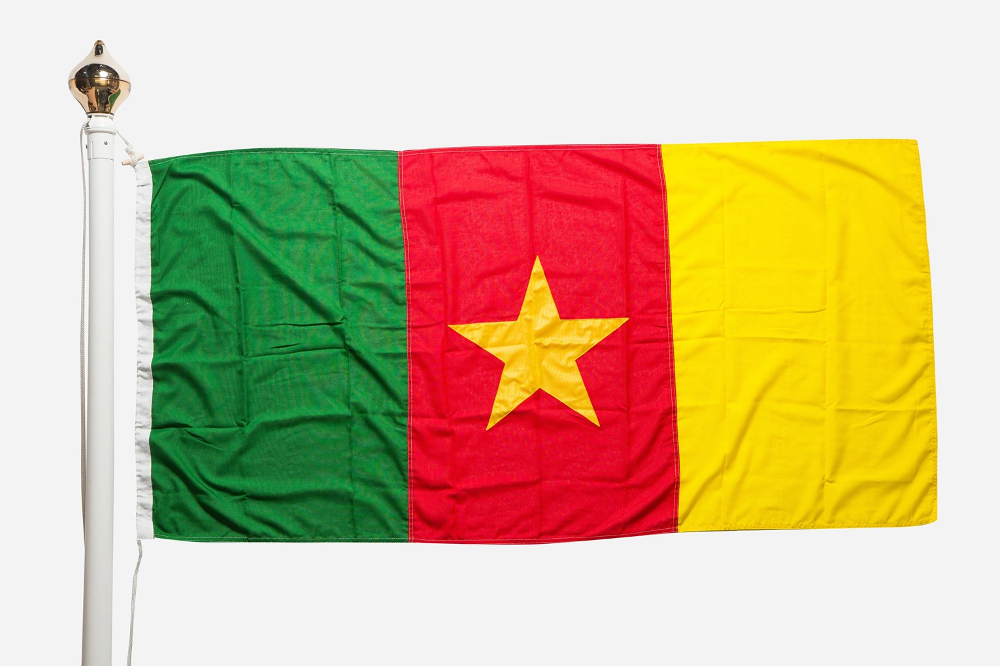
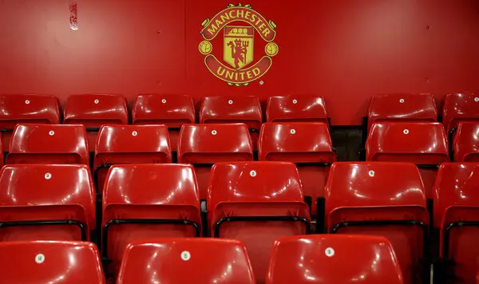

Cameroon Football Federation President Samuel Eto’o who was also a former striker has apologised for a “violent altercation” after attacking a man outside the World Cup stadium following Brazil’s 4-1 victory over South Korea earlier this week. On Monday, fans were taking selfies with Eto’o outside Stadium 974 in Doha when he was approached by a man who was filming him and made some comments that angered Eto’o, as seen in videos that went viral on social media.
|
“I had a violent altercation with a person who was probably an Algerian supporter, I would like to apologise for losing my temper and reacting in a way that does not match my personality,” Eto’o said in released statements in French and English on his Twitter account on Wednesday. |

Eto’o, who is also a Qatar 2022 World Cup ambassador, called on Algerian authorities and its football federation “to put end to this unhealthy climate before a more serious tragedy occurs”. |
ADVERT 11. WHO intensifies surveillance in E Guinea after Marburg outbreak |
ADVERT 2Yaounde — Cameroon's health ministry has dismissed a report of two suspected cases of Marburg virus in the country after a first deadly outbreak in neighboring Equatorial Guinea. Health officials along the border said Tuesday there were two suspected cases of the severe hemorrhagic fever in Cameroon after Malabo confirmed nine deaths and sixteen possible infections. Despite dismissing the reported cases, Cameroon's health ministry says it is increasing surveillance and travel restrictions along the border. |
ADVERT 3Health Minister Manaouda Malachie says Cameroon does not yet have any suspected cases of the Marburg virus, despite reports of two possible infections. Health officials in Cameroon's South region on Tuesday said a teenage boy and girl suffering from high fever were rushed to a hospital Monday in Olamze, on the border with Equatorial Guinea. The health officials said the children were suspected of being infected with the Marburg virus, are in isolation, and are responding to treatment. |